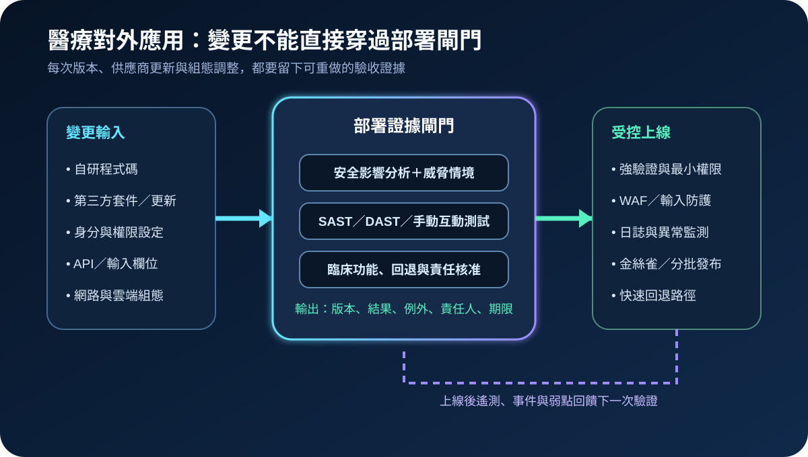
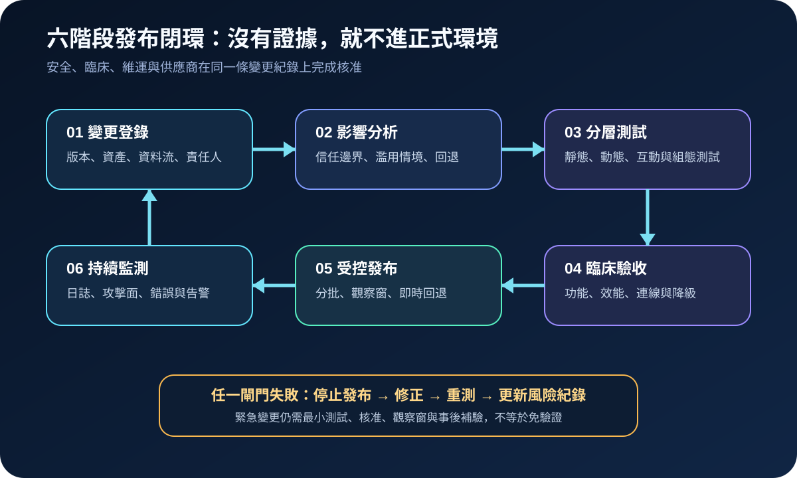
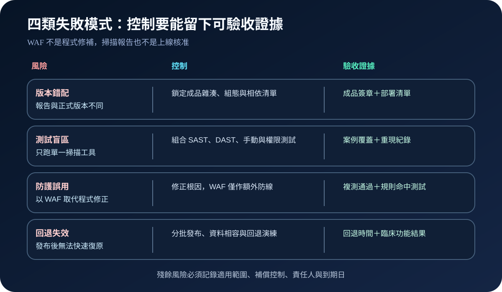

醫療資安國際觀察 · 2026-09-25
醫療對外應用如何避免帶病上線：從安全影響分析到回退驗收
作者：Dr. William｜醫療資訊與資安治理實務工作者
對外應用的安全性不能只靠年度掃描。每次程式碼、第三方套件、身分設定與基礎設施變更，都應先確認影響範圍，再以分層測試、臨床驗收、受控發布及回退證據決定是否上線。
名詞解釋：發布閘門不是一張核准單
安全影響分析是在變更前辨識資產、資料流、信任邊界、濫用情境與控制差異；SAST檢查原始碼或成品中的弱點；DAST從執行中的應用驗證外部行為；手動互動測試用於驗證權限、業務邏輯與工具不易發現的攻擊路徑；發布閘門則把測試結果、例外、臨床影響與回退能力轉成可核准的部署條件。
國際現況與適用邊界
美國 HHS OIG 於 2026 年 1 月發布醫院資安稽核報告。受測的四個對外網路應用中，一個帳號管理應用缺乏強式驗證；另一個應用的輸入驗證不足，且未配置足夠的網路應用防火牆保護。報告指出，該弱點由供應商更新帶入正式環境，既有弱點掃描及第三方滲透測試未在上線前發現；OIG 因此要求擴大使用動態、靜態及手動互動測試。
HHS 醫療資安績效目標把網路應用掃描、抗釣魚多因素驗證、資安測試與弱點緩解列為醫療機構可優先採行的自願性目標。NIST 於 2025 年 12 月發布 SSDF 1.2 初稿，提供可整合到不同軟體生命週期的安全開發、交付與持續改善實務。OIG 稽核結論、HHS 目標及 NIST 初稿屬美國治理與技術參考，並非台灣醫療機構的直接法定義務。
對台灣醫療機構的適用方式：可將這些資料轉成院內變更管理、採購驗收與供應商更新條款；實際控制強度仍須依台灣法規、資料敏感度、對外曝露、臨床關鍵性及停機容忍度決定。
規劃：把版本、風險與臨床服務放進同一清冊
範圍至少涵蓋病人入口、員工入口、帳號管理、API、遠端維運與雲端管理介面。應用負責人維護版本與資料流；資安團隊定義威脅情境、測試深度及殘餘風險；臨床及營運單位設定功能、效能、降級與回退條件；供應商交付相依清單、修補資訊及測試證據。驗收指標可包含高風險發現關閉率、測試案例覆蓋、版本對應率、例外逾期數、回退時間及上線後告警有效率。

實作：建立六階段發布閉環
- 登錄變更：固定成品雜湊、套件、組態、資料庫變更、部署目標與責任人。
- 分析影響：辨識外部介面、權限、敏感資料、臨床依賴、濫用情境及回退限制。
- 分層測試：依風險組合 SAST、DAST、相依弱點、組態、API、權限與手動互動測試。
- 臨床驗收：驗證功能、互通、效能、稽核紀錄、故障、降級與資料完整性。
- 受控發布：採金絲雀或分批發布，設定觀察窗、即時停止條件與可驗證回退。
- 持續監測：追蹤攻擊面、WAF 命中、認證異常、錯誤率及新弱點，回饋下一次變更。
風險：掃描過關仍可能帶著盲區上線
常見失敗包括測試版本與正式成品不同、只執行單一掃描工具、把 WAF 當成程式修補，以及資料結構改變後無法回退。控制重點是鎖定成品與組態、以多種測試覆蓋不同失敗模式、修正輸入驗證等根因，並在發布前實際演練回退與臨床恢復。

可執行清單
- 正式部署的成品、組態與相依套件是否能對回測試版本？
- 外部入口、API、帳號管理與遠端維運是否完成安全影響分析？
- 測試是否同時涵蓋靜態、動態、權限、業務邏輯與手動驗證？
- WAF、MFA 與監測是否經過實際命中及繞過情境測試？
- 臨床功能、資料完整、效能、降級與回退是否有明確通過條件？
- 例外是否具備補償控制、責任人、期限及重新評估日期？
來源
- HHS Office of Inspector General｜A Large Southeastern Hospital Could Improve Certain Security Controls to Enhance Its Ability to Prevent and Detect Cyberattacks（發布：2026-01；查閱：2026-09-25）
- U.S. HHS｜Healthcare and Public Health Sector Cybersecurity Performance Goals（查閱：2026-09-25）
- NIST｜SP 800-218 Rev. 1 Initial Public Draft, Secure Software Development Framework Version 1.2（發布：2025-12-17；查閱：2026-09-25）
- CISA／FBI｜Secure by Demand Guide（發布：2024-08；查閱：2026-09-25）
內容說明
本文依健康台灣深耕計畫相關治理內容整理，並參考 HHS OIG、HHS、NIST 與 CISA 公開資料，提出台灣醫療機構可採用的對外應用安全影響分析、分層測試、臨床驗收、受控發布及回退方法；不把美國稽核建議、自願性目標或 NIST 初稿視為台灣法定義務，也不取代主管機關公告、契約判讀、法律意見或個案風險評估。